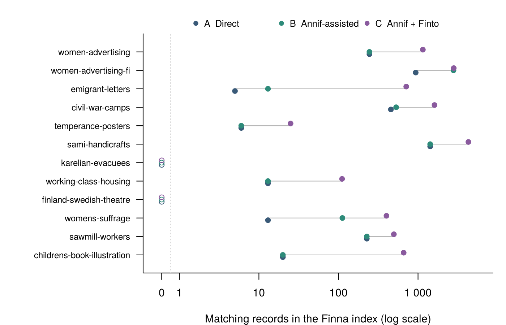
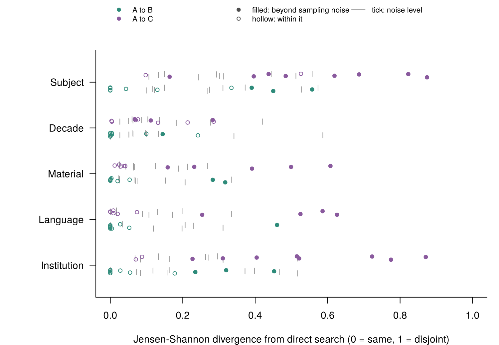
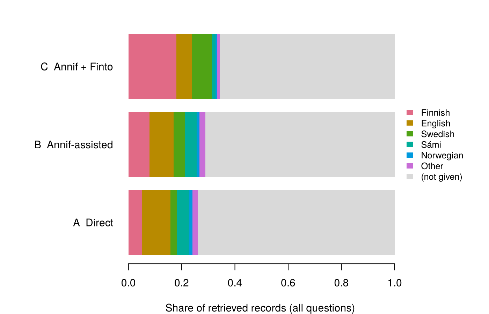
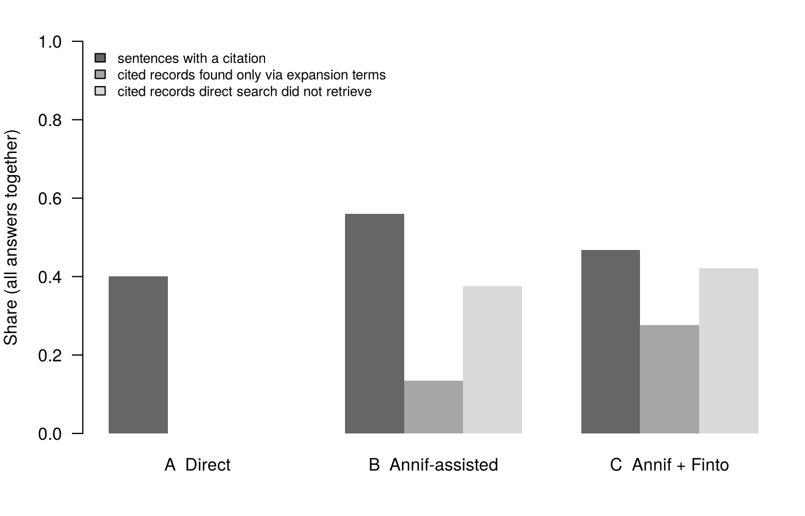

9 Figures for the paper
The five figures heritageRAG made for the paper, what each one shows and how to read it
In short. heritageRAG draws five figures for the paper and saves them in results/final/paper/. This page shows them as they are, with a plain explanation of each. The other pages draw simpler versions of some of them for a general reader. These figures were made by heritageRAG 0.3.2 on 30 October 2026, leaving out Amateur radio clubs.
Figure 1. How wide each search is
What it shows. For each question, how many records in the whole Finna index match search A (your own words), B (+ Annif) and C (+ thesaurus terms).
How to read it. One row per question, one dot per search. The scale is logarithmic: each step to the right is ten times more records. The grey line joins the smallest and the largest search. An open circle at “0” means the search matched nothing.
What it tells us. In the middle question, search C matches 4.4x as many records as A. Annif’s words (B) often change nothing: in 6 of 10 questions the green and blue dots sit on top of each other. The same chart, with the questions’ full names: What we found, section 1.
Figure 3. Which differences are bigger than chance

What it shows. For five things (institutions, languages, material types, decades and subject words), how different the mix in search B or C is from search A, for each question.
How to read it. Each dot is one question. Further right means a more different mix: 0 is the same mix, 1 is nothing in common (the Jensen-Shannon divergence, the “difference score” of the other pages). Each dot has a grey tick: the difference that chance alone would give with this many records. It is found by drawing two samples of the same sizes from the two searches’ records put together, many times over. A filled dot is beyond its tick, a real difference. A hollow dot is within it, possibly just chance.
What it tells us. Between A and C the difference is bigger than chance for subject words in 8 of 10 questions, for institutions in 8 of 10, for languages in 4 of 10, for material types in 5 of 10 and for decades in 3 of 10. Between A and B the counts are much lower: subject words 3 of 10, institutions 3 of 10, languages 1 of 10, material types 2 of 10 and decades 1 of 10. The thesaurus terms change who and what is visible far more often than Annif’s words do.
Figure 4. The languages of the records

What it shows. The language of all records each search kept, all questions together. All Sámi languages are counted together.
How to read it. Each bar is one search and adds up to all its records. Grey is records without a language in Finna, mostly photographs and objects.
What it tells us. The language is not given for 74% of A’s records and 66% of C’s. Among records with a language, the Finnish part grows the most from A to C (20% → 52%) and the English part shrinks the most (41% → 17%). What we found, section 5 shows the same shares counting only records with a language.
Figure 5. Where the AI’s evidence came from

What it shows. Three shares for the AI answers of each search, all answers together.
How to read it.
- Dark: sentences that cite at least one record.
- Middle: cited records that only match through a word Annif or the thesaurus added.
- Light: cited records that search A did not find at all.
Search A has no middle or light bar, because all its records come from your own words.
What it tells us. 42% of the records the AI cites when it works from search C were not found by search A, and 28% were found only through the added words. The search step changes the evidence, and so the story the AI tells. The same numbers as a table: AI answers.
The tables
The same folder holds three tables for the paper:
table1_queries.csv: the exact search of each question and condition;table2_conditions.csv: the averages per search (the table at the end of What we found);table3_visibility.csv: the differences per dimension, with how many questions are beyond chance.